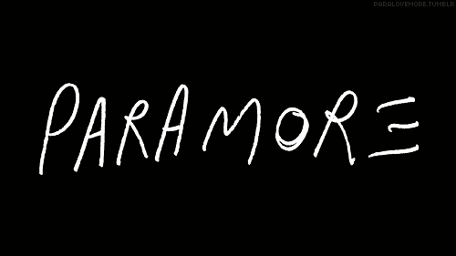

Paramore es una banda estadounidense de pop punk y rock alternativo integrada por Hayley Williams (voz), Taylor York (guitarra) y Zac Farro (batería). Fue formada en Franklin, Tennessee, en 2004, por Williams y Jeremy Davis (bajo) junto con Josh Farro (guitarra líder y coros), Zac Farro (batería) y Jason Bynum (guitarra rítmica)
